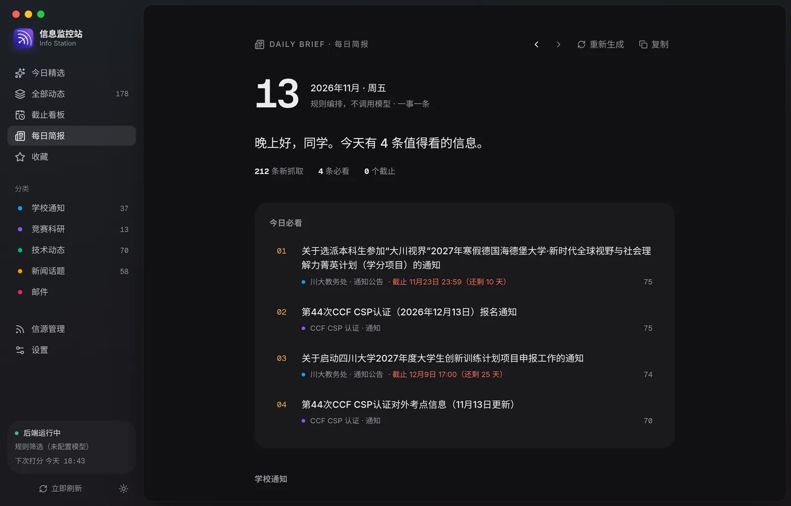
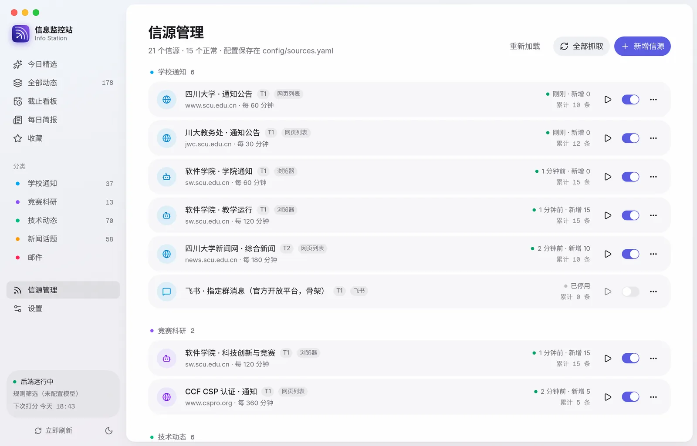
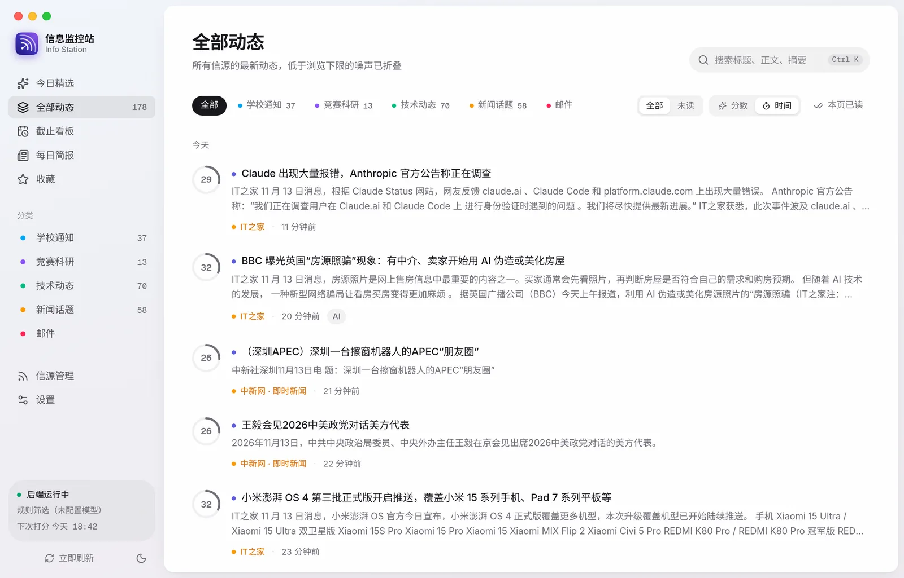
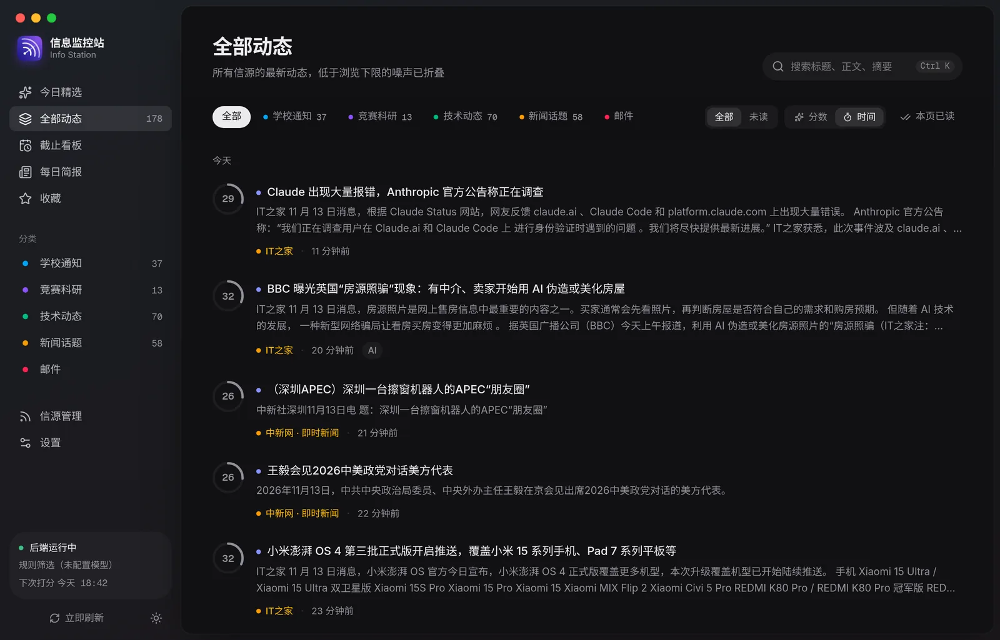

安静，但什么都在。
macOS 风格的无边框窗口，跟随系统深浅色。




学校通知、竞赛科研、技术动态、新闻和邮件，汇进一个安静的桌面窗口。每天在 DeepSeek 谷时批量打分，只把真正值得看的推给你。


规则 + 大模型两道筛选，给每条信息打出重要性、一句话摘要和截止日期。
官网、教务处、学院通知直接抓取；按你的年级与学院判断「和你有没有关系」，研究生专属、其他年级的自动降权。
从正文里抽出报名、提交的截止时间，按 3 天 / 本周 / 一个月排好。「24 点」「中午 12 点」都能读懂。
抓取随时进行，模型打分每天一次，自动避开 DeepSeek 高峰时段和法定节假日表；没有 Key 也能只用规则。
QQ 邮箱、川大邮箱、Gmail、Outlook。只读收取、不标已读、不发不删；授权码只存进 Windows 凭据管理器。
RSS / Atom、GitHub Trending 与 Releases、用你自己登录的浏览器每天看一次 X 关键词和账号。
托盘常驻、开机自启。关机或休眠错过的抓取和打分，醒来后错峰补跑，不会把电脑唤醒。
macOS 风格的无边框窗口，跟随系统深浅色。

